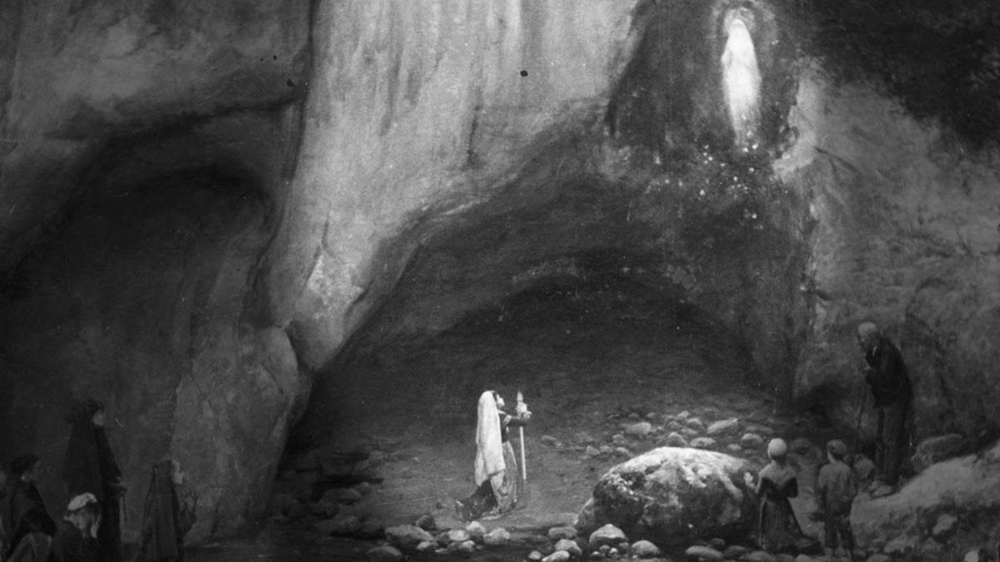
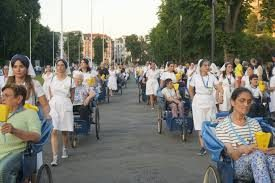
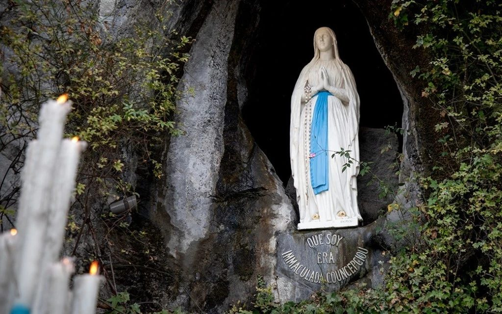
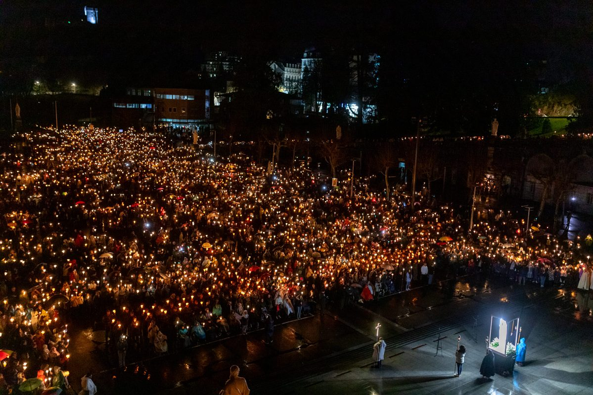

Historia y Origen

Marie-Bernarde Soubirous nació el 7 de enero de 1844 en Lourdes, una pequeña ciudad al pie de los Pirineos franceses, en el seno de una familia paupérrima. Su padre, François Soubirous, había sido molinero hasta que la ruina económica lo dejó sin oficio; la familia vivía hacinada en el cachot, una antigua celda carcelaria habilitada como vivienda. Bernadette era la mayor de varios hermanos, sufría de asma crónica y tenía una salud frágil que le había impedido recibir la Primera Comunión a causa de su escaso catecismo. Era, en todos los sentidos, la candidata menos esperada para protagonizar uno de los mayores fenómenos espirituales del siglo XIX.
El 11 de febrero de 1858, Bernadette salió con su hermana Toinette y una amiga a recoger leña a orillas del río Gave. Al acercarse a la gruta de Massabielle, una cavidad rocosa frecuentada por cerdos y cubierta de maleza, escuchó un ruido como de viento y vio en el nicho superior de la roca a una joven de extraordinaria belleza, vestida de blanco con una faja azul y rosas amarillas sobre los pies. La figura la miró con ternura, rezó el rosario con ella y desapareció. Bernadette regresó el 14 de febrero, y de nuevo el 18, cuando la aparición le habló por primera vez y le pidió que volviera durante quince días consecutivos.
A lo largo de ese quindenio y hasta julio de 1858, Bernadette vivió dieciocho apariciones en total. Las autoridades civiles y eclesiásticas la interrogaron repetidamente, intentando desacreditarla o disuadirla, pero su relato permaneció siempre coherente, sereno y sin contradicciones. El 25 de febrero la aparición le indicó que cavara en el suelo de la gruta: brotó una fuente de agua cuyas propiedades curativas comenzaron a ser afirmadas desde los primeros días. El 2 de marzo, la Señora le transmitió un mensaje para el clero: que se construyera una capilla en ese lugar y que las gentes acudieran en procesión. Y finalmente, el 25 de marzo de 1858, Fiesta de la Anunciación, la aparición reveló su identidad con las palabras que quedarían grabadas para siempre en la historia de la Iglesia.
Bernadette ingresó en la congregación de las Hermanas de la Caridad en Nevers, donde vivió hasta su muerte el 16 de abril de 1879, a los 35 años. Su cuerpo, hallado incorrupto en tres exhumaciones posteriores (1909, 1919 y 1925), se venera hoy en una urna de cristal en la capilla del convento de Saint-Gildard en Nevers. Fue beatificada en 1925 y canonizada por Pío XI el 8 de diciembre de 1933.
("Yo soy la Inmaculada Concepción", en dialecto gascón)
Las Curaciones de Lourdes

Desde los primeros días de las apariciones comenzaron a reportarse curaciones inexplicables entre quienes bebían o se bañaban en el agua de la fuente de Massabielle. La Iglesia, consciente de la gravedad de tales afirmaciones, estableció en 1858 una comisión médica para estudiar los casos, instituida formalmente en 1883 como Bureau des Constatations Médicales —Oficina de Constataciones Médicas—, que sigue funcionando en la actualidad como un organismo laico y pluriconfesional abierto a cualquier médico del mundo.
El proceso de verificación de una curación de Lourdes es notablemente riguroso. En una primera fase, el médico tratante documenta el diagnóstico previo con pruebas clínicas. Luego, la Oficina Médica de Lourdes examina el caso y determina si la curación es "inexplicada en el estado actual de la ciencia". A continuación, un comité médico internacional evalúa el expediente. Solo si todos estos filtros científicos se superan, el caso es remitido al obispo de la diócesis de origen del enfermo para su posible declaración como milagro. Desde 1858 hasta la fecha, la Iglesia ha reconocido oficialmente 70 curaciones como milagros de Lourdes, la más reciente en 2013. El número de curaciones "inexplicadas" pero no declaradas milagros supera los varios cientos.
Entre los casos más estudiados figuran el de Louis Bouriette (1858), cuya ceguera parcial desapareció tras lavarse los ojos con el agua de la fuente; el de Gabriel Gargam (1901), paralítico total que caminó ante miles de testigos; y el del diácono Serge François (2011), cuya parálisis multifocal remitió completamente y que fue declarado milagro en 2013 por el obispo de Versalles.
Arte e Iconografía

La imagen canónica de Nuestra Señora de Lourdes fue fijada por la escultura que el obispo de Tarbes encargó en 1864 al artista Joseph-Hugues Fabisch, quien trabajó a partir de las minuciosas descripciones de Bernadette. La Señora aparece de pie, con las manos juntas y ligeramente elevadas, los ojos alzados al cielo en actitud de éxtasis orante. Viste una túnica blanca ceñida por una faja o cinturón azul celeste —el detalle que más llamó la atención de Bernadette—, y sobre sus pies descalzos reposan sendas rosas de oro. La imagen se replica en millones de réplicas distribuidas por todo el mundo y ha dado nombre a un estilo iconográfico inconfundible.
La gruta de Massabielle, con su nicho natural donde se apareció la Señora, constituye el corazón del santuario. Es un lugar de oración permanente, iluminado por miles de velas y decorado con muletas, bastones y exvotos dejados por peregrinos que han experimentado curaciones. Las grandes procesiones nocturnas con antorchas, en las que decenas de miles de fieles recorren la esplanada mientras cantan el Ave, Ave, Ave Maria, son una de las tradiciones devocionales más emocionantes de la Iglesia universal.
Devoción y Culto Actual

El Santuario de Nuestra Señora de Lourdes es el santuario mariano más visitado de Europa y uno de los más frecuentados del mundo, con más de cinco millones de peregrinos al año. El recinto comprende varias iglesias superpuestas —la Cripta (1866), la Basílica del Rosario (1889), la Basílica Superior o de la Inmaculada Concepción (1871) y la Basílica de San Pío X (1958, con capacidad para 25.000 personas)— construidas en torno a la gruta original, que permanece abierta las 24 horas del día.
Una de las prácticas más singulares de la peregrinación a Lourdes es el baño en las piscinas del santuario, donde voluntarios asisten a los enfermos y peregrinos que desean sumergirse en el agua de la fuente. Cada año, alrededor de 350.000 personas utilizan estos baños, muchos de ellos enfermos graves trasladados desde sus países de origen en los trenes hospitalarios que peregrinan a Lourdes desde finales del siglo XIX.
El 13 de mayo de 1992, el papa Juan Pablo II instituyó el 11 de febrero —conmemoración de la primera aparición— como Jornada Mundial del Enfermo, en conexión directa con el mensaje de Lourdes y su especial vinculación con el sufrimiento y la esperanza. Desde entonces, la Iglesia universal dedica esa fecha a la oración por los enfermos, los agentes de salud y todos los que sufren.
Oración a Nuestra Señora de Lourdes
Oh María Inmaculada, Nuestra Señora de Lourdes, tú que quisiste revelarte en la humilde gruta de Massabielle a una niña pobre y sencilla, te pedimos que intercedas por todos los que sufren en cuerpo y alma. Que el agua de tu fuente sea signo de la gracia que sana y da vida nueva. Acompaña a los enfermos en su dolor, fortalece a los que los cuidan y renueva en todos nosotros la fe en la misericordia de tu Hijo. Amén.